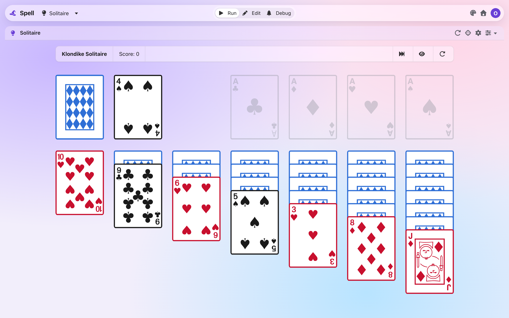
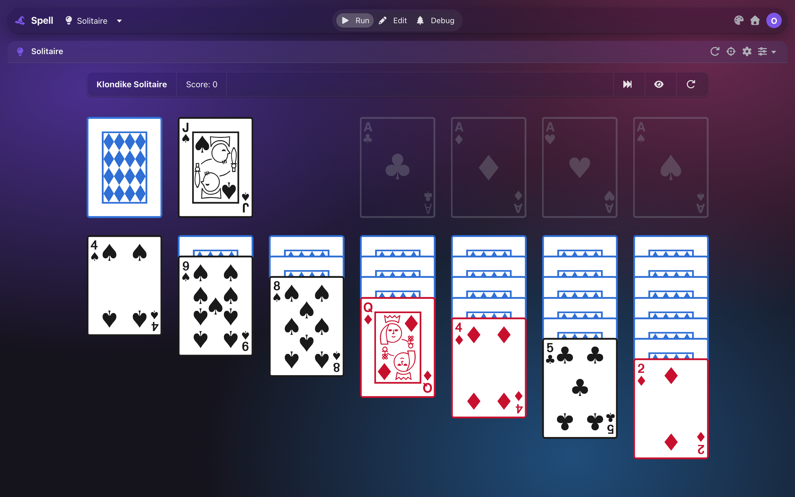
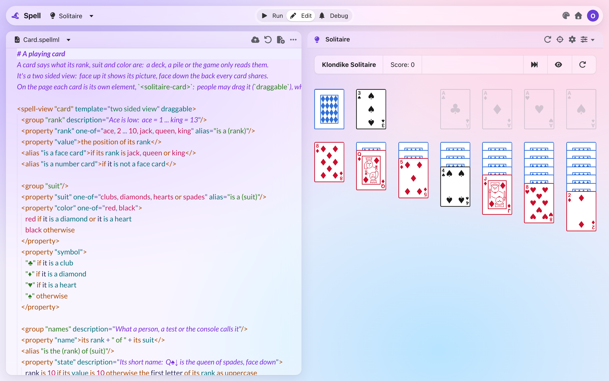
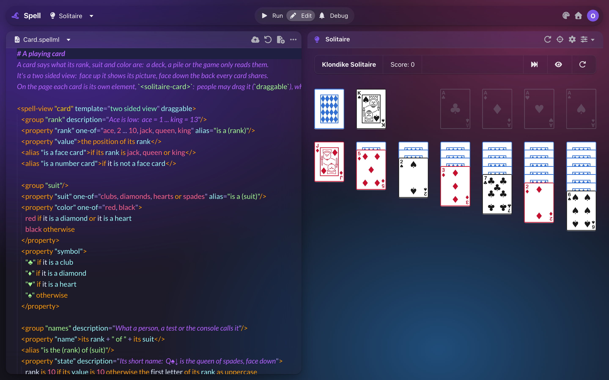
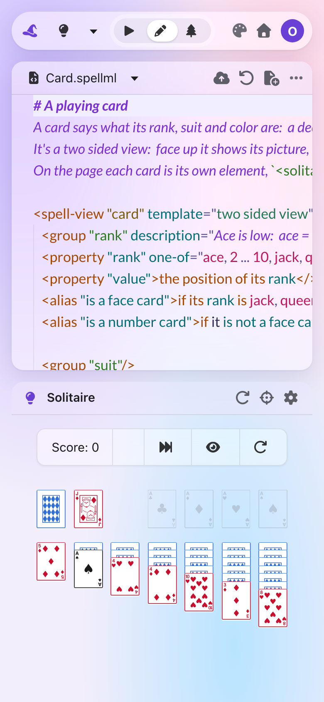
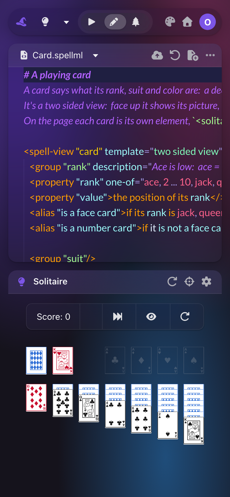
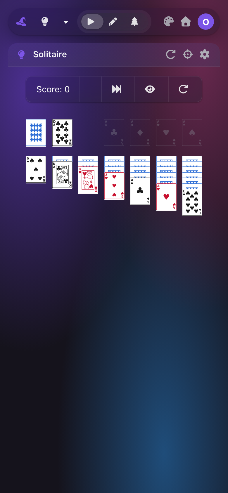

The editor's top bar
A sketch of the editor's new top: app menus that show their keys, the app's tools moved up into the bar, and the project's files as tabs. Comment on it before it's built.
debut -- the Spell editor's first public look: its themes, its Inspector, its
chrome.Today the top of the editor is three rows of controls, from the top:
- The top bar: Spell's hat, the project menu ("Solitaire ▾"), Run | Edit | Debug in the middle, and the theme, Home and you at the right.
-
Each pane's own header:
- the code's: the file menu ("Card.spellml ▾"), then Save, Reload, New File and a "..." menu
- the app's: its title, then Restart, Pick a part (the crosshairs), Settings, and the Inspector ▾
- The Inspector's cards have headers of their own (left as they are here).
Taken headlessly from the running editor, Solitaire, at 1440px wide:







One bar instead of two. The app's tools move up into its right group, and the app gets ~44px more room.
- Left: the hat, the project menu, then the menus: File · Edit · View · Run · Help.
- Middle: Run | Edit | Debug, as today.
-
Right, two groups 60px apart (the bar's spacing rule):
- the app's tools: Restart, Pick a part, Settings, the Inspector ▾
- yours: the theme, Home, you
- The app's title ("Solitaire") was in the row that goes: the project menu already says it.
Run mode, dark -- the Inspector open, picking
The same, light
- The bars are drawn at the editor's width, 1240px, shrunk to fit this page's column.
- The house is a "⌂" character: the docs pages can't draw the editor's house icon. The editor's own icons (play, pencil, crosshairs) are swapped for the closest the docs pages have.
- The bar keeps today's spacing rule: groups at least 60px apart, icons in a group 12px apart. The app's tools are a group of their own; no new margins.
The same top bar. Over the code, the file menu and its buttons become a row of tabs: every file of the project, always there.
- A file with changes not saved has a dot on its tab; Save (⌘S) clears it.
- No opening or closing: the project's files ARE the tabs (Solitaire has five).
- Save, Reload, New File and the "..." menu's items go to the File and Edit menus (section 4).
- The app's tools stay in the top bar while you edit: the app still shows, on the right.
Edit mode, dark -- Card.spellml has changes not saved
<spell-view "card" template="two sided view" draggable>
When the tabs don't fit. Drag the box's right edge to make it narrower.
The code column, narrow -- Spell UI's <ui-menu shrinkable>
-
Worth knowing:
shrinkabledoesn't fold just the tabs that don't fit. It shortens every title with "…" first, then shows icons only, then folds EVERY tab into one "…" button. -
"Only the ones that don't fit go into …" (as VS Code and browsers do) would be a new stage for
shrinkable: a question below.
Every command the editor has today, put into five menus. Each key is one the editor already answers to: the menus are drawn from the same list the keys come from, so a key a menu shows always works.
- NEW marks an item the editor has no command for yet.
- "Static" marks what the public build leaves out today (it has no server): it'd be left out of the menus too.
-
The Spell UI
<ui-action shortcut>draws each item and its key: ⌘ on a Mac, Ctrl elsewhere.
The five menus, open, drawn flat -- a mode or card that's on would be ticked
| Command | Key today | Where it is today | Into | Static |
|---|---|---|---|---|
| Save | ⌘S | code header icon | File | kept |
| Reload (from the server) | ⌘⇧R | code header icon | File | kept |
| New File | ⌘N | code header icon; file menu; "..." | File | left out |
| Duplicate / Rename / Delete File | -- | file menu; "..." | File | left out |
| Compile and run | ⌘↵ | no button: the editor compiles as you type | Run | kept |
| New {Type} (Example, Guide, Project) | -- | project menu | File | left out |
| Duplicate / Rename / Delete {Type} | -- | project menu | File | left out |
| Reset {Type} | -- | top bar, public build only | File | only there |
| Show line numbers | -- | code "..." | View | kept |
| Settings… (the code editor's) | -- | code "..." | Edit | kept |
| Run | Edit | Debug | -- | top bar, middle | stays; also View | kept |
| Restart | -- | app header icon | bar; Run | kept |
| Pick a part of the app | Esc stops picking | app header crosshairs | bar; Run | kept |
| Let go of the picked part | Esc | the picked part's pill, ✕ | Run | kept |
| Settings (the project's) | -- | app header gear | bar; Run | left out |
| Inspector, open / close | -- | app header icon | bar; View | kept |
| Inspector cards: Properties, Views | -- | app header ▾ | bar; View | kept |
| Hide a card | -- | the card's eye | stays | kept |
| Clear Console | -- | Debug's panel, Output tab | stays; also Run | kept |
| Program panel tabs, Close | -- | Debug's panel | stays | kept |
| Theme: Light / Dark / Auto, the themes, Edit theme… | -- | top bar palette | bar; View | kept |
| Home | -- | top bar; the hat | bar; Help | kept |
| You | -- | top bar avatar | stays | left out |
| Help | -- | nowhere: a stub that does nothing yet | Help | left out |
-
The editor's keys, outside the code: ONE list,
EDITOR_HOTKEYS: ⌘S, ⌘⇧R, ⌘↵, ⌘N. -
Inside the code, the code editor adds three of the same itself (⌘S, ⌘⇧R, ⌘↵), in
editor.onInputDidMount(): a second list to keep in step. -
The menus' items are the app's actions (
Actions), which hold no keys today. The build would give each hotkey the action it runs, so the menu, the keys and the code editor read one list. -
What the public build leaves out is one list too,
HIDDEN_IN_STATIC_BUILD: the menus read it, so their server-only items go. - ⌘N probably never reaches the editor: Chrome keeps ⌘N for a new window, and gives a page no say. To check before it's printed in a menu.
- The NEW items in Edit (Undo, Redo, Find) are the code editor's own commands: the menu would only run them.
At 390px the bar can't hold five menus and the tools, so it folds:
- the hat, the project menu, then ONE ☰ menu holding File · Edit · View · Run · Help as sub-menus
- Run | Edit | Debug as icons, as today
- you, at the right; the app's tools are in ☰ › Run and View
- over the code: the file tabs become one dropdown, "Card.spellml ▾"
Edit mode, 390px
The bar gets app menus after the project's name. Which ones? Section 4 shows what each would hold.
The five drawn above: the names every desktop app uses, so people know where to look.
File · View · Run · Help. Edit would hold only the code editor's own commands, which right-click already has; its Settings… moves to View.
A single menu with the five as sub-menus, at every width: the quietest bar, but one more click.
Restart, Pick a part, Settings and the Inspector move into the top bar. The first sketch showed them only while running. But the app shows in Edit and Debug too, beside the code. Which modes show them?
They work on the app, which shows in every mode: picking a card while editing its code is the Inspector's main use.
As first sketched. In Edit and Debug they'd be in the Run and View menus only, or back in a header over the app.
Debug is Edit plus the Program panel under the code (its output, the compiled code). With a View menu, is it still a mode of its own?
Run | Edit | Debug in the middle, as today: nothing to relearn. View lists them too.
Run | Edit only. View › "Program Panel" shows or hides it in Edit, like VS Code's terminal panel.
Run | Edit, and a bug icon in the app's tools that opens the panel.
In Edit, the project's files are tabs over the code. Can you close one?
A project has a handful of files; the tabs are its file list. Nothing to manage.
Open files only, each with a ✕; the project menu or a file list opens the others.
Spell UI's shrinkable menu shortens every tab's title, then folds them ALL into one "…" button. Is that what you want, or only the ones that don't fit folded away?
Whole tabs while they fit, the rest in "…", as browsers and VS Code do. A new stage for
shrinkable, which every menu would get.
Titles cut with "…", then icons, then one "…" for all: no Spell UI work. Try it in section 3.
The bar's right end gets the app's tools. Where do the theme palette, Home and your avatar go?
At the far right, 60px after the app's tools, as drawn: where they are today.
Theme into View, Home into Help (the hat goes Home already): the right end is the app's tools and you.
Avatar too, as a "You…" item: the right end is only the app's tools.
New, Duplicate, Rename and Delete the project (and the public build's Reset) sit at the foot of the project menu, "Solitaire ▾". Where do they go?
One place for every "make, copy, rename, delete"; the project menu only switches projects.
File holds only the file's actions; the project's stay with its name.
The menus show only today's keys (⌘S, ⌘⇧R, ⌘↵, ⌘N, Esc). Add keys for the modes, the Inspector and picking?
Ship the menus first. Many keys are the browser's (⌘1-9 switch tabs, ⌘N a new window): new ones need a careful pick, an epic item of their own.
Say which in Other, e.g. ⌥⌘I for the Inspector, ⌃⌘1-3 for Run, Edit, Debug.